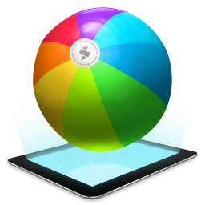

Design Process
Some Tools We Love
Here we love using tools which help us do our jobs better. We are inundated with a multitude of different
devices and platforms when designing for mobile experiences.
And if you design for mobile, chances are you're using some tool that lets you preview your design on your
phone's screen (and if you don't, shame on you : )
Designers at Hook and Loop enjoy using Skala Preview in order to see their designs on mobile devices
while working.
Skala Preview sends lossless, color accurate image previews to any iOS or Android device. Previews are
pixel perfect. Colors are identical to how the final app or website will look on the device.

Realtime Preview
If you're using Photoshop CS5, CS6, or CC, Skala Preview can preview your canvas as you edit. No saving,
no keyboard shortcuts, just lossless previews in realtime.
Getting Started with Skala Preview
To connect and start previewing images from your Mac, launch Skala Preview on your Mac and Skala View on
your iOS or Android devices. Then, tap the computer icon in Skala View to see the list of available computers.
Your Mac and mobile device will need to be on the same Wi-Fi network to see each other.
Once Skala Preview and Skala View have found each other, you'll be prompted to approve the connection.
This happens once for each device connected. To remove previous authorizations, choose Reset All Authorizations
from the Settings menu. Doing so will mean connecting devices will have to be approved again.
If you can, using Skala Preview with iOS's Personal Hotspot via USB is a fast and reliable way to work.
Sending Images in Real Time with Photoshop
This is awesome. If you use Photoshop, then this is the method we recommend using. For instructions on how
to set this up, please read Skala Preview and Photoshop CC.
Skala Preview also works with Photoshop CS5 and CS6.
Sketch Mirror
Mirror works beautifully with Artboards. You can quickly view your design from your iPhone and swipe between
artboards.
Designers often have a hard time reviewing designs they want to really "feel" what it's going to look like
in action. As such, designers are always looking for great ways to prototype our designs and the interactions.
Tip: In order to get this to work properly, you need to put each screen on a different artboard. The
app swipes through all your artboards in order. To swipe down, create a new page with artboards on them.